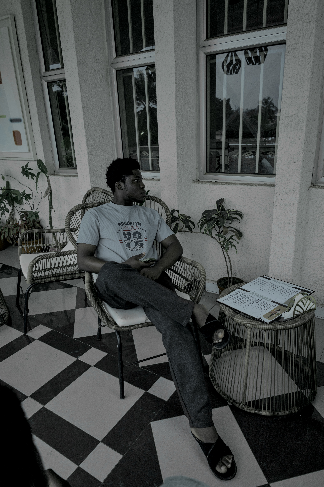

Frontend
HTML · CSS · JavaScript · responsive UI · interaction · accessibility basics
I design and build websites that have some personality and enough engineering behind them to survive real people clicking things. My work covers commerce, hospitality, service businesses, booking flows and product ideas. I like the visual stuff. I also like the bit where the payment actually verifies.

My process sits between design and development, so I can shape the visual direction, build the interface and connect the useful bits behind it. I aim for sites that feel specific to the business instead of “template number 47 with a different logo.”
HTML · CSS · JavaScript · responsive UI · interaction · accessibility basics
Firebase · API-connected flows · order logic · data · authentication patterns
Paystack · carts · checkout · inventory · wholesale · product journeys
Luxury fashion storefront built around Modern Italian Opulence and image-led browsing.
Live ↗Restaurant site for a restored 1954 dining house with menus, reservations and private events.
Live ↗Retail and wholesale fashion store with Paystack, Firestore inventory, orders, customer data, analytics and admin tools.
Live ↗Multi-area UK cleaning website with services, rates, estimates, booking, hiring and feedback.
Live ↗I test small screens, keep interfaces usable and try not to let “creative” become a synonym for “where did the menu go?”